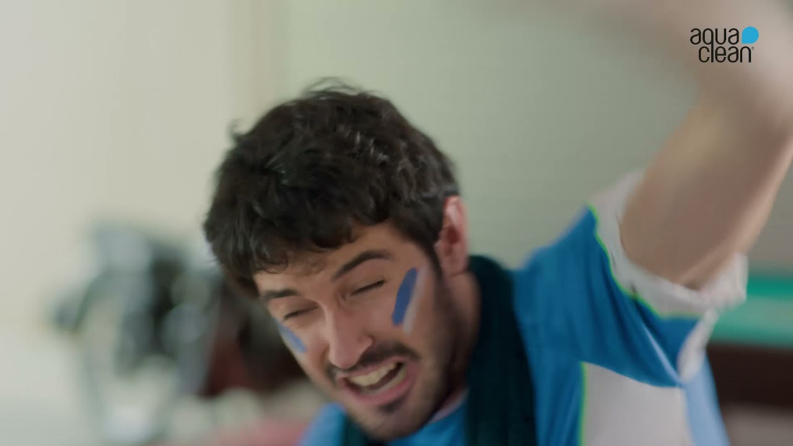
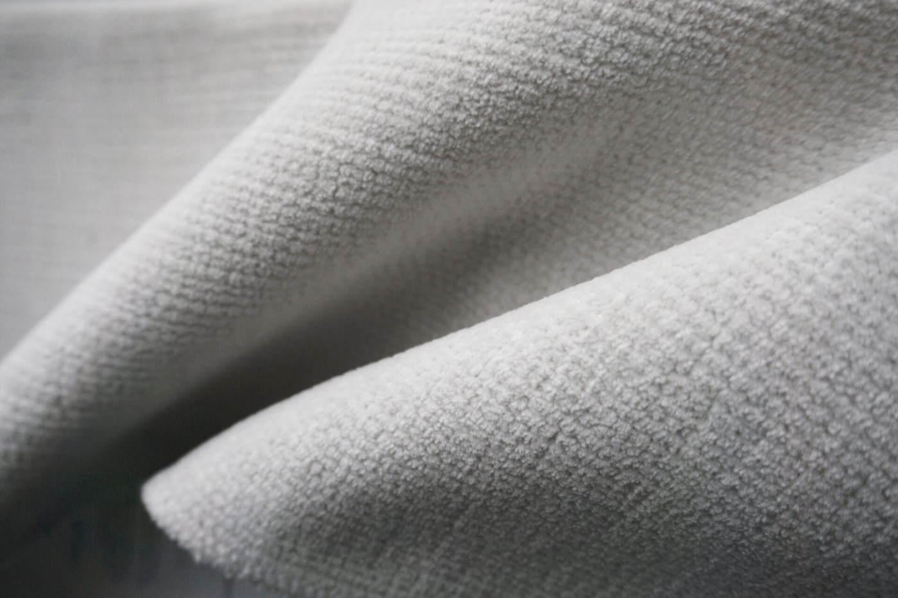

Le macchie
vanno via
con l'acqua
Tessuti Aquaclean: si puliscono con un po' d'acqua, senza detergenti. intessutoitalia è Distributore Ufficiale.
Cosa toglie Aquaclean
- Vino
- Inchiostro
- Sugo
- Grasso
- Fango
- Cioccolato
- Crema
Vanno via con un po' d'acqua.
Aquaclean è una protezione avanzata per il rivestimento dei divani che ricopre ogni fibra del tessuto con uno strato molecolare invisibile, evitando che lo sporco penetri al suo interno.

Come si toglie
una macchia
01 / 03
Bagna
Versa un po' d'acqua sulla macchia: resta in superficie, non entra nella fibra.
02 / 03
Tampona
Lo sporco sale nell'acqua: con un panno pulito, senza strofinare, lo porti via.
03 / 03
Asciuga
Il tessuto torna com'era, senza aloni e senza detergenti.
Aquaclean
in azione
Sei video per vederlo all'opera: dal vino sul divano agli animali di casa, fino alla tecnologia che c'è dietro.


Le collezioni
Aquaclean
01 — 06Antimacchia
Alboran
Trama mélange dalla mano morbida, nei toni dell'azzurro e del blu.
Vedi il tessutoFlorence
Tinta unita chiara dalla trama compatta: morbida, luminosa, facile da abbinare.
Vedi il tessutoBison
Effetto scamosciato caldo al tatto, nei toni del cuoio e del caramello.
Vedi il tessutoAndros
Un piccolo disegno a grana di riso, fitto e regolare: il classico che non stanca.
Vedi il tessutoOasis
Velluto liscio a pelo corto, in colori pieni e brillanti.
Vedi il tessutoMykonos
Bouclé leggero bicolore, dall'aspetto naturale.
Vedi il tessutoTutti i tessuti
Aquaclean
Cerca per colore, composizione o caratteristica, oppure richiedi i campioni da toccare con mano.